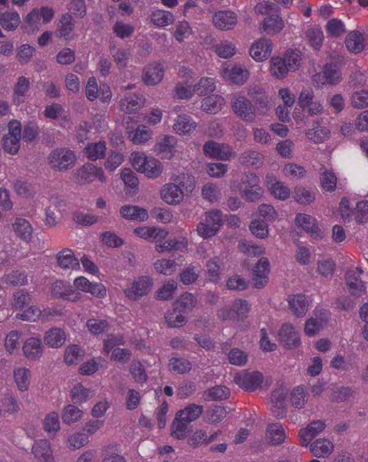
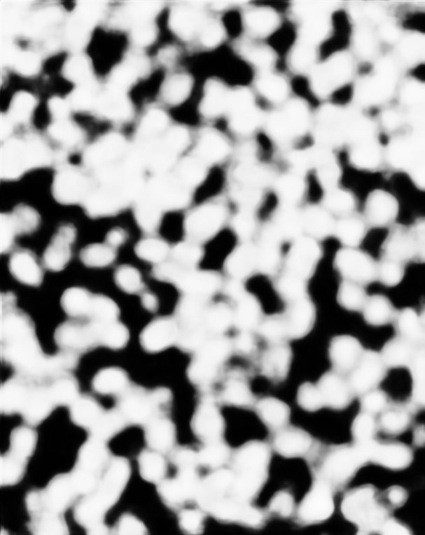
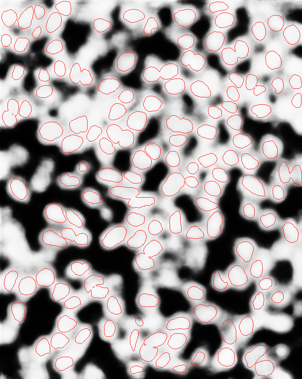
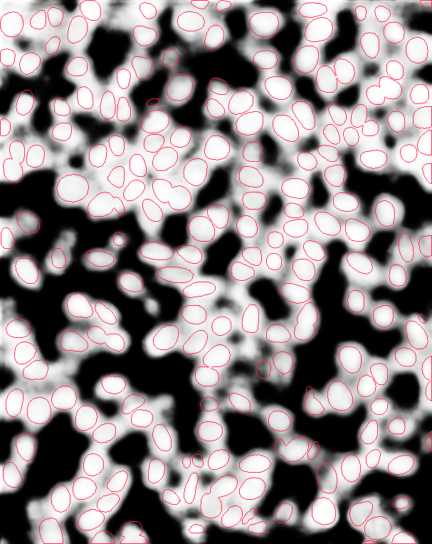

Corrected MoNuSAC tissue image
This is TCGA-2Z-A9JG-01Z-00-DX1_4, a 40× kidney ROI scanned at 0.2524 µm/pixel. The H&E red/blue order was verified against its scanner image. The pinned GigaTIME CNN used the corrected RGB image on its 0.25 µm/pixel grid with corrected patch-overlap weighting. This field is one diagnostic example from the corrected scanner-RGB inputs. The full 120-image corrected benchmark and its QC outcomes are linked below.




Quality decision: fail. AUC and edge balance improved, but the approximate QC on the saved 8-bit preview finds nuclear boundary contrast 0.0376, below the provisional 0.05 gate. The image remains spatially diffuse. This PNG-based check is not the native-store production QC, and agreement with H&E nuclei is not proof that virtual DAPI matches measured fluorescence. We cannot accept this case's markers for a cell-type accuracy claim.
Read the inference and AUC record, approximate full QC, and image provenance. StarDist found 210 nuclei on the corrected image; its display overlay used an image-wide contrast curve without changing predictions.
Measured versus virtual marker maps
The ORION comparison uses one registered 2048 × 2048 tissue window per patient at 0.325 µm/pixel. Select any of the 10 reserved patients with passing virtual-DAPI nuclear and seam QC and any of the ten prespecified marker pairs. Each image shows the registered H&E, measured whole-cell fluorescence, the original virtual whole-cell mean, and the development-selected virtual summary on the same published cell IDs. These are cell-level maps reconstructed from the released ORION table and cell mask, not raw fluorescence micrographs. Blue-to-yellow color encodes each field's within-cell percentile rank, which makes spatial ordering comparable with Spearman correlation; it does not compare absolute abundance or fluorescence calibration.

Grey cells are excluded or unmatched. The measured panel is published single-cell IF abundance painted onto the published cell mask. Nuclear and cytoplasmic virtual summaries are still compared with whole-cell measured IF, because this release's per-cell table does not contain separate measured compartments.
Do the tested summaries improve association?
A summary was chosen on six development patients; the table reports the remaining ten QC-passing patients. Values are equal-patient median within-field Spearman ρ. The paired change is the median of each patient's selected-minus-original ρ, so it need not equal the difference between the two displayed medians. The maps above show both gains and failures without selecting a favorable patient or marker.
| Virtual → measured | Selected summary | Original ρ | Selected ρ | Paired change |
|---|---|---|---|---|
| DAPI → Hoechst | Whole-cell local contrast | +0.454 | +0.380 | −0.045 |
| CD68 → CD68 | Nucleus minus cytoplasm | −0.227 | −0.099 | +0.171 |
| CD4 → CD4 | Cytoplasm maximum | +0.212 | +0.224 | +0.012 |
| CD8 → CD8a | Nucleus mean | +0.059 | +0.061 | −0.004 |
| CD20 → CD20 | Cytoplasm mean | +0.176 | +0.177 | +0.003 |
| PD-L1 → PD-L1 | Nucleus mean | +0.066 | +0.067 | +0.004 |
| CD3 → CD3e | Cytoplasm maximum | +0.236 | +0.167 | −0.013 |
| PD-1 → PD-1 | Cytoplasm maximum | +0.131 | +0.130 | +0.003 |
| Ki67 → Ki67 | Cytoplasm mean | +0.168 | +0.177 | +0.004 |
| CK → Pan-CK | Whole-cell maximum | +0.189 | +0.268 | +0.035 |
Interpretation: CK has a modest positive gain, although CK/Pan-CK are related targets rather than an exact protein pair. CD68's numerical gain still leaves a negative association. Other changes are small or unfavorable. Passing DAPI QC does not establish that any other predicted marker is biologically reliable, and these exploratory images do not validate Tambua cell typing.
The stopped partial study includes 25 completed patients; 19 were reserved for evaluation and 10 of those passed both technical QC checks. Read the analysis and limitations, inspect the per-patient scores, and see the ORION data release.
Corrected cell-type benchmark
The full corrected run uses 120 MoNuSAC regions: 88 training and 32 patient-separated test images across breast, kidney, lung and prostate. All 120 images were verified against scanner RGB, and all 23 GigaTIME channels were quantified with CellPhenotyper on the 0.25 µm/pixel model grid. Native DAPI QC passed 50 images and failed 70.
High accuracy does not establish four-class cell identification. On the 40 QC-passing training and 10 QC-passing test images, fastPLS 0.4 scored 95.7% accuracy at 4,082 source-annotated regions. Epithelial and lymphocyte recalls were 96.6% and 94.5%; all three macrophages were missed and no neutrophils occurred in that selected test subset. Four-class balanced accuracy is therefore undefined. The result is conditional on expert-drawn regions and QC selection, not end-to-end StarDist detection.
| Corrected-RGB evaluation | Train / test images | Test regions | Accuracy | Four-class balanced accuracy | Key limit |
|---|---|---|---|---|---|
| Native-DAPI-QC passing only | 40 / 10 | 4,082 | 95.71% | Undefined | 0/3 macrophages; no test neutrophils |
| All-image diagnostic | 88 / 32 | 10,776 | 96.65% | 48.36% | Includes 70 QC failures; both rare classes have zero recall |
Open the 32-image side-by-side viewer → It shows corrected H&E, source annotations, exploratory predictions, error overlays, virtual DAPI, CK, CD3 and CD68 for every held-out image, with native QC status. The large purple regions in TCGA-2Z-A9JG-01Z-00-DX1_6 come from MoNuSAC source polygons labelled macrophage, not from StarDist; 41 large source macrophage polygons across the cohort are flagged for review without changing the labels.
Read the protocol and limitations, QC-selected score, all-image diagnostic score, and source-annotation geometry audit. The classifier used all 23 GigaTIME channels in each of the nuclear and cell-proxy compartments (46 features). TRITC and Cy5 are background controls. An image containing only one expert class does not test within-image multiclass discrimination.
Does the GigaTIME implementation work on paired reference data?
On one released paired H&E/fluorescence control patch, the pinned CNN's virtual DAPI passes the technical nuclear QC against the released nuclear mask. Its AUC against the released thresholded DAPI is 0.901. The control supports the checkpoint and physical-scale implementation, but its patient independence is not established and it does not validate transfer to MoNuSAC tissue.


The technical QC, paired DAPI comparison, and source record give the exact limits of this control.
Comparison methods
| Method | Same corrected MoNuSAC test | Interpretation |
|---|---|---|
| Tambua: GigaTIME + fastPLS 0.4 | QC-selected: 40 train / 10 test images; 95.71% overall accuracy | Conditional source-region typing; rare classes not established |
| CellViT++ | No verified compatible prediction | No head-to-head score |
| HoVer-Net | No verified same-cohort prediction | No head-to-head score |